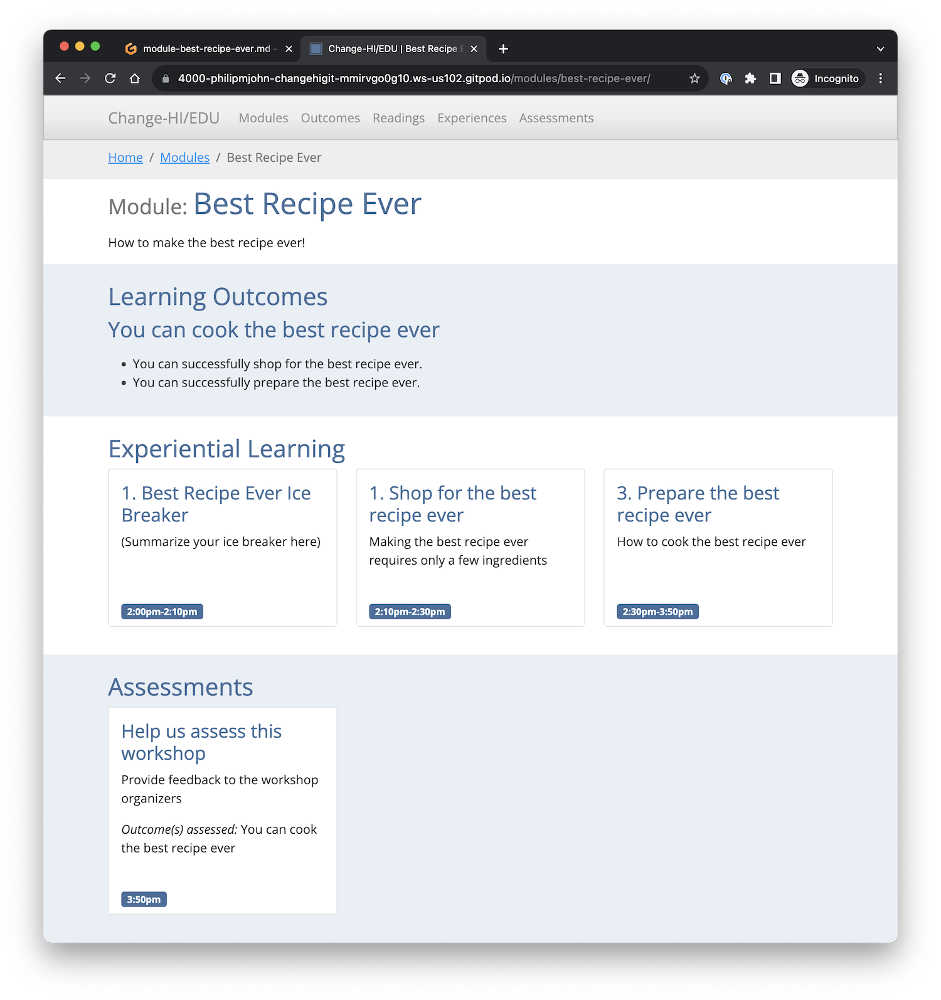

4. Workshop Development
If you’ve gotten this far, you should now have your own personal version of the Change-HI workshop site running in your own browser.
In this section, you’ll start to learn how to add content to build your own workshop.
Best Recipe Ever!
There is a “secret” module in the Change-HI repository called “Best Recipe Ever”. It is unpublished by default. In this part of the workshop, you are going to edit this module to create a simple workshop that teaches everyone how to cook (what you consider to be) the best recipe ever!
Publish the Best Recipe Ever workshop module
Open the morea directory in your browser-based VS Code editor, then open the file named “module-best-recipe-ever.md”. You should see something like the following displayed in your browser:

Line 2 of this file contains published: false. That’s why this module is secret. Edit this line to be published: true, then type command-S to save the file.
Now, do the following:
- Click the mouse inside the Terminal window to make it the active window
- Type
control-c(to stop the running process) - Type
control-p(to redisplay the last command). - Press
return(to re-run the last command (bundle exec jekyll serve))
If all goes well, you’ve restarted Jekyll and the last line in the Terminal window is “Server running… press control-c to stop”.
Switch to your browser tab displaying the site, click on the “Modules” link, and you should now see the Best Recipe Ever workshop:

Click this link to see the contents:

Code walkthrough
Sit back and relax
Let the instructor give you a guided tour of the Best Recipe Ever module.
Bio Break!
Let’s take a brief break to stretch before moving on to the next page. See you in a few minutes.